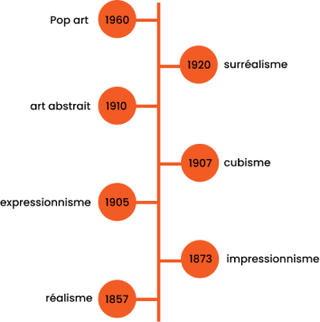

Les pilliers du mouvement abstraits
Vassily Kandinsky


Frise chronologique des dates du début de chaque mouvements après 1850
Art’strait expo
Vous voulez en savoir + sur l’abstrait ?
Voir des œuvres en pleine exposition ?
Vous êtes au bon
endroit.